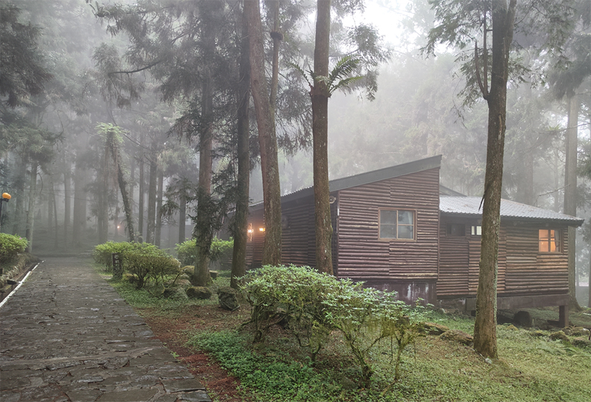

|  |
每次到了連續假期，大兒子總是盼望著問著我：「爸爸，這次我們放假會到哪裡玩呢？」在他問到此問題前，我們會在連續假期的前二個月左右先預訂飯店。一來選擇的條件會比較多，二來可以就附近的景點有比較完善的規劃。在以健康為前提的情況下，遠離城市的喧嘩，沿途欣賞途中的美景，眺望高山的雄壯，帶著探險的初衷，逐漸走進大自然的懷抱，同時也達成親子共遊的目的。
溪頭幾乎是我們一家四口每年必定去旅遊的景點之一，當然今年的旅程也不例外。去此景點的好處是：因為該旅途中它有大部份是寬敞的高速公路，沒有過多的蜿蜒小路，所以能避免小孩暈車嘔吐的事情發生。我們車子才開上高速公路沒多久，就能得意地看到後座的小孩全都睡著了。這個原因一方面是車子的空間寬敞，而另一方面可能是換上新的日製避震器所帶來的舒適感。就這樣我們開了一段路後，在中途選擇一個休息站吃午餐與休息一下。當中讓我印象比較深刻的是我最小的兒子，前一秒他才呼呼大睡，下一秒鐘卻宛如一條小猛龍，四處要找小朋友討玩兼賣萌。接著對於新奇的東西手也不停地指著，似乎迫不及待的想探索與了解些甚麼。
很快地，我們就進入了溪頭風景區，接著散步在通往大學池的步道，感到渾身非常舒暢！除了欣賞高大的樹木之外，還能沐浴在芬多精之中，當時已接近傍晚，整個空氣瀰漫著薄霧，可謂是神清氣爽！再加上看到孩子們也在追逐跑跳快樂的樣子，心靈似乎也得到了充份的滿足感，因而開車疲憊也隨諸拋在腦後囉。由於我們夫妻倆考慮小兒子年紀不到2歲與染疫風險關係，因此我們選擇入住的地方是以小木屋為主，它擁有外面自然的空氣，沒有中央進氣空調，價格雖然不斐，但是尚在能力範圍之內。畢竟快樂的出門，安全健康的返家才是出遊的最終目的。在路途上，我們隨手外帶一份快炒進入小木屋內食用，小孩們也很快地把整個房間氣氛都炒熱起來，就這樣他們也度過一個歡樂的夜晚。隔天一早，我們用完早餐後，由於屋外下著雨，且擔心路上可能因此會塞車太久，也就不帶他們散步到太遠的地方，只能帶著依依不捨的心情踏上歸途回家。
由此可見，旅行過程可以讓我們小孩開闊眼界，比方說大兒子每當看到新奇的事物，都會好奇詢問我和老婆那個是甚麼，藉此達到書本可能無法及時教到的事物；同時，我們也能訓練他們對事物的臨場反應，以及讓他們試著去理解一些陌生的事物。每一次路途中，他們學會了在哪裡跌倒就在哪裡堅強地站起來，而不是就在那裡睡覺。這彷彿對我們訴說的是一種能隨遇而安的感覺；當然若是再更進一步地學會超齡同理心－對於人事物就會有一顆感恩的心，進而不認為凡事都是理所當然，這不也身為父親的對孩子的教育的期望啊！旅遊不只是旅遊，它訴諸的是一種育教於樂的最高境界。